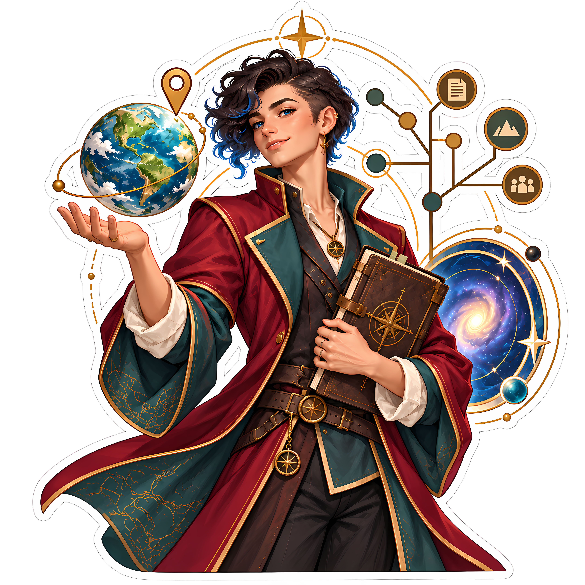

Keep track of worlds.
Lorenzo is world, campaign, and character bookkeeping for game masters, players, authors, and worldbuilders — from a single D&D one-shot to a five-author shared multiverse.
“Scholar, not wizard. Archivist, not administrator. Worlds, not fantasy worlds.”
Color system
Ink and Paper carry the interface. Archive Blue drives interaction. Medici Gold is punctuation, not a surface — identity.md §6.3 puts it at roughly 2–5% of a screen.
Typography
Geist for interface and body. Instrument Serif, used sparingly, for editorial and display moments. Geist Mono for code, IDs, and anything that benefits from monospacing.
Only the GM knows this. Add a person, place, event, or object.
Old-world scholarship × modern information system.
{
"kind": "entity",
"tenant_id": "acme-guild",
"name": "Catileo",
"prototype": "cat",
"canonical": true
}
| Hero display | Lorenzo |
| H1 | A campaign is a world in motion |
| H2 | Repositories |
| Entity title | Catileo |
| Body | The text you're reading right now. |
| Metadata | updated 3 minutes ago |
| Code | entity.tenant_id |
Logo on light & dark
identity.md §4.8: Ink wordmark + Gold mark on light surfaces; Paper wordmark + Gold mark on dark surfaces. These two panels always render at their documented background, regardless of the page theme toggle above.
Supporting graphic language
The spark reappears as a restrained system element — dividers, canonical markers, loading states — per identity.md §7.1. Elsewhere, Lorenzo's visual vocabulary is nodes, paths, and relationships: information architecture, not treasure maps (§7.2).

Information architecture, not treasure maps.
Mascot
Personality lives in illustration; the core mark stays disciplined. The mascot appears in onboarding, empty states, and community moments — never as a stand-in for the logo.

Lorenzo
An androgynous worldkeeper and archivist — sidecut, blue-tipped hair, blue eyes, contemporary scholarly styling. Reads as a person who maintains worlds, not a fantasy wizard.
Voice
Clear, concise, curious, quietly playful — an archivist, not a dungeon master. No “embark on your adventure.” identity.md §14.2: